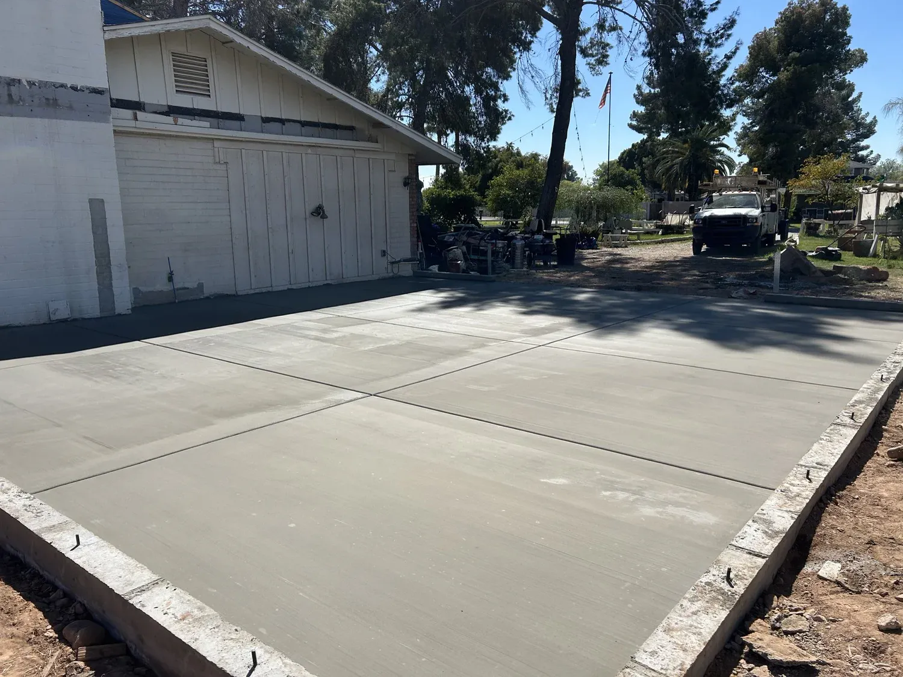
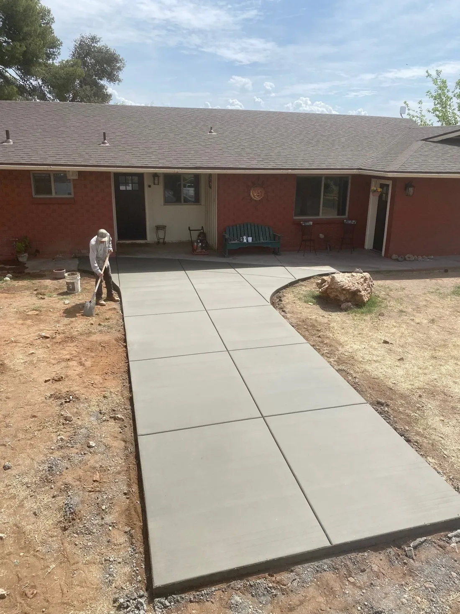
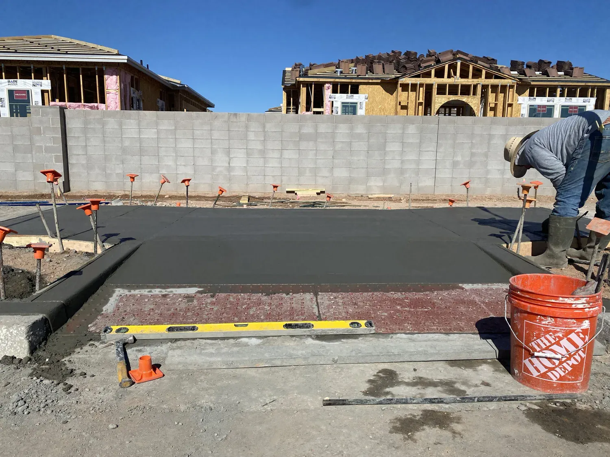
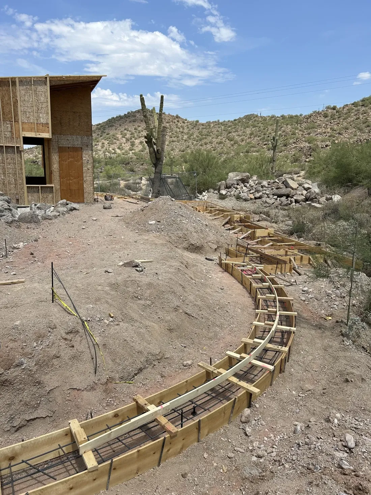
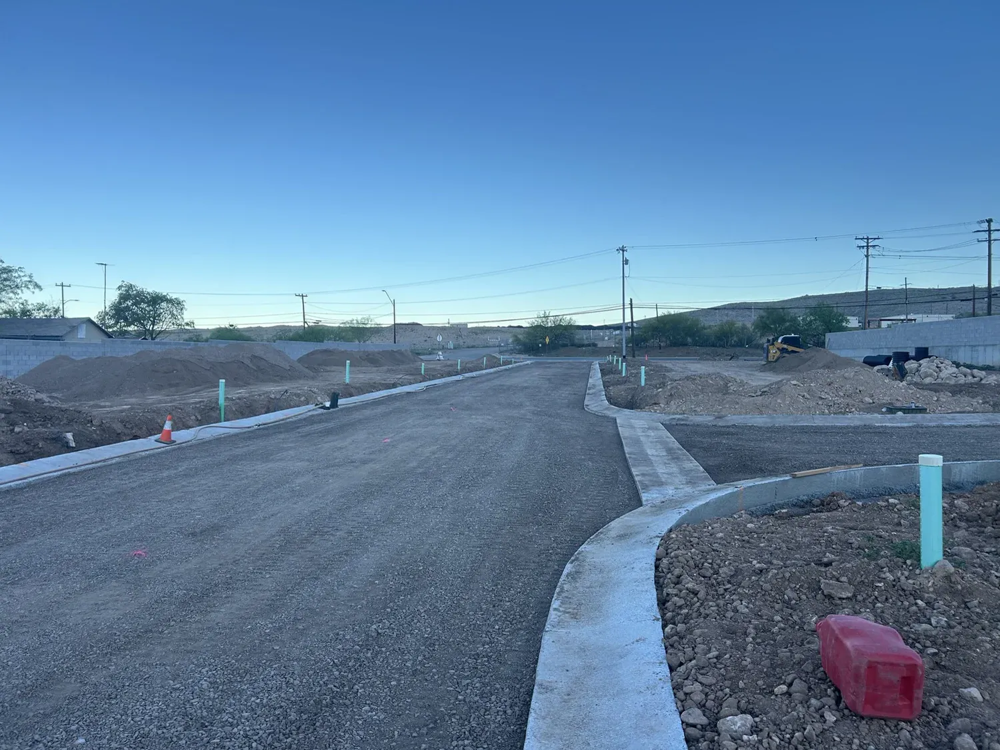
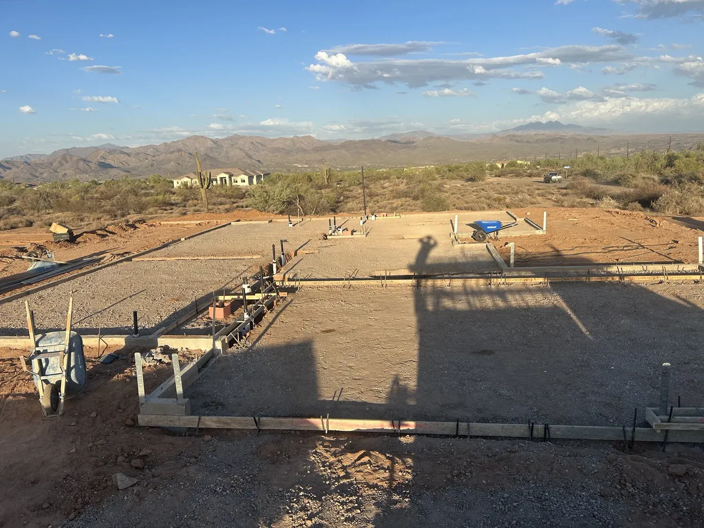
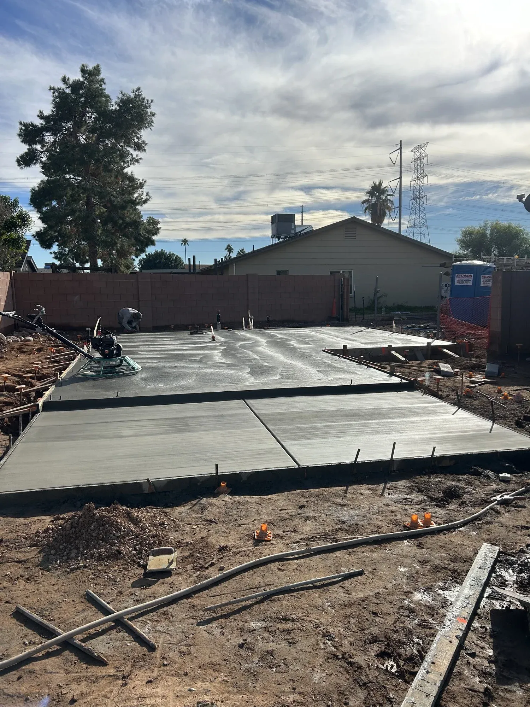

Concrete doesn't do second chances.
Bridge Concrete pours flatwork, foundations and structural concrete for homes and businesses across Mesa and the East Valley.
A truck of concrete gives you about ninety minutes.
Then it starts to set. No undo. No second pour.
Skip the prep, add a little water, rush the finish, and you'll see it in the cracks for years.
This is not a weekend project.


The rushed driveway
Water on the base, a hose in the form.
A wet, loose base settles. The slab on top of it follows.
Soupy mix, poured fast.
Extra water makes concrete easy to place and much weaker once it cures.
Then the cracks show up.
No steel, no planned joints, so the slab picks its own places to break.
And then comes the teardown bill.
Breaking out and re-pouring costs more than doing it right once.

Same driveway. Which crew do you want?


The right way
Same job. Done by pros.
- Site prepped and graded to drain
- Forms set to the project plans
- Reinforced where the plans call for it
- Concrete placed and finished with care
- Built to meet structural requirements
Built right. On schedule.
- Licensed, bonded and insured
- ROC #348650
- Free estimates
- 4.3 stars from 6 Google reviews
What we do.
Residential and commercial. Pick one to see how we do it.
Flatwork
Patios, driveways, sidewalks and walkways, graded so water leaves.
See how we do itFoundations
Foundations and slabs for homes and commercial buildings, poured to the plans.
See how we do itStructural Concrete
Formed, reinforced concrete poured to project plans, like lintels above openings.
See how we do itExcavation & Grade Work
Slope, drainage and a level base ready for new concrete.
See how we do itADA Ramps
Accessible ramp approaches with a smooth transition, built to the plans.
See how we do itCurb & Gutter
Roll curb, curb and gutter and driveway approaches along streets and sites.
See how we do itRetaining Walls
Poured walls that hold a slope and hold their line.
See how we do itSaw Cutting
Clean cuts for control joints, tie-ins and removal work.
See how we do itADU & Garage Slabs
Slabs for ADUs, garage extensions, workshops and room additions.
See how we do itNot sure which one you need?
Our work.
A few recent pours. Ask us for more near you.






How we keep it honest.
Concrete is hard to judge until it's too late to change. So we put the important parts in front of you early.
-
A free estimate.
Reach out for a free estimate or consultation and we talk through what your project needs.
-
Licensed, bonded and insured.
ROC #348650. Residential and commercial concrete in Mesa and the East Valley.
-
Locally owned.
A small business that treats a driveway the same as a larger commercial job.
-
Built to the plans.
Foundations, structural concrete and ADA ramps follow the project plans and specifications.

A local crew. Careful work.
Bridge Concrete is a locally owned concrete contractor serving Mesa, Arizona, and the surrounding communities. As a small business, the aim is affordable concrete for everyone, whether it is a small home project or a larger commercial job.
From driveways and patios to foundations and structural concrete, every project gets the same care and attention to detail.
- License
- ROC #348650
- Coverage
- Licensed, bonded and insured
- Based in
- East Mesa, AZ
Where we work.
Serving Mesa and the East Valley and the towns around it.
- Mesa
- Chandler
- Gilbert
- Phoenix
- Fountain Hills
- Apache Junction
- Gold Canyon
- Superior
- Queen Creek
Not on the list? Call and ask about your address.
Call (602) 741-1404What customers say.
Hover a bubble to read it.Tap a bubble to read it.
4.3 average from 6 reviews. Read them on Google
Nicholas and his crew did a great job on our driveway repair. Dependable, great communication, top notch customer service, and quality work.
Bridge concrete poured the foundation for the extension we added onto our house and filled in the step down in our living room. We couldn’t be happier with the end result.
Had a great experience with Bridge Concrete. They were professional, courteous and was able to meet a tight deadline I had for my project.
Booking is simple.
-
Call or send the form
Tell us what you need poured and where.
-
We talk it through
Free estimate or consultation on your project.
-
You get a bid
Request a bid and get the scope and price.
-
We build it
Prep, forms, pour and finish.
Questions we hear a lot.
Do you work on both homes and businesses?
Yes. Bridge Concrete does commercial and residential concrete, from a small home project to a larger commercial job.
What do you pour?
Flatwork, foundations, structural concrete, curb and gutter, ADA ramps, retaining walls and ADU and garage slabs. We also do excavation and grade work and saw cutting.
Where do you work?
Mesa, Chandler, Gilbert, Phoenix, Fountain Hills, Apache Junction, Gold Canyon, Superior and surrounding areas.
Is your estimate free?
Yes. Contact us for a free estimate or consultation.
Are you licensed and insured?
Bridge Concrete is licensed, bonded and insured. Arizona ROC #348650.
How long until I can walk or drive on new concrete?
Most slabs take foot traffic after a day or two, and vehicles usually wait longer. Concrete keeps gaining strength for about 28 days, so ask us for dates on your job.
Ready when you are.
Call us, or send the details and we'll call you to talk through your project.